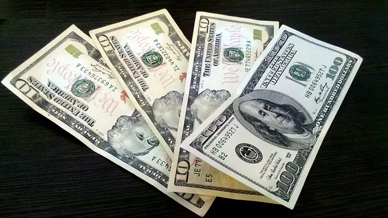
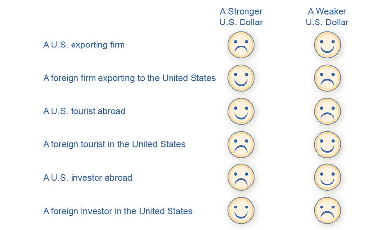
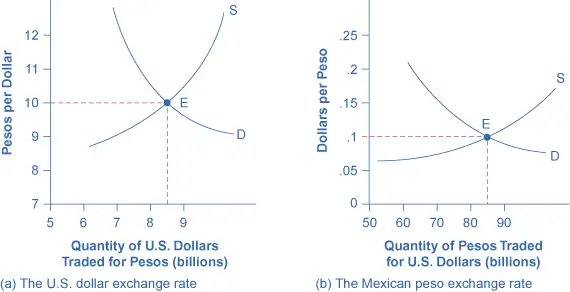
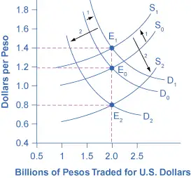
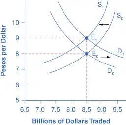
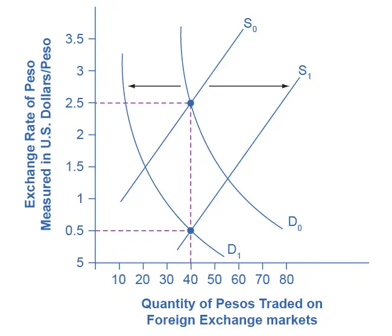
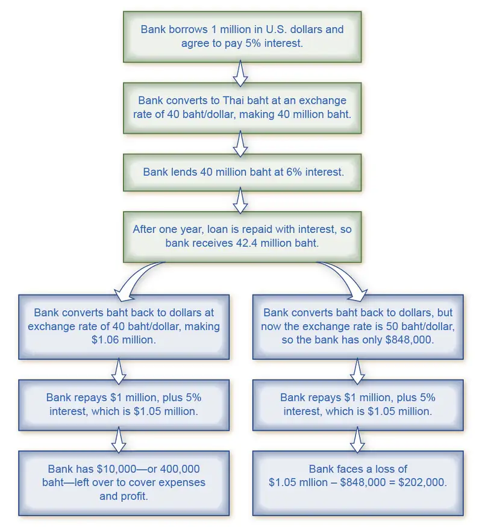
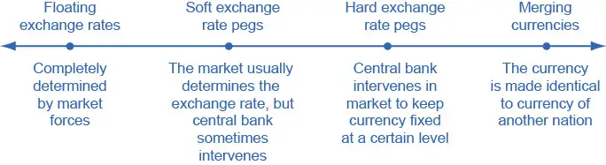
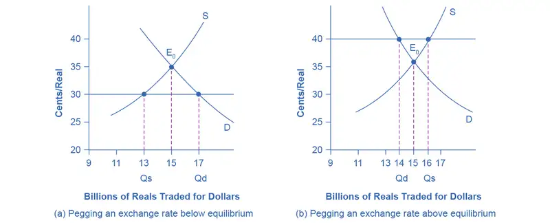

Chapter 29: Exchange Rates and International Capital Flows¶
Introduction¶

Bring It Home: Is a Stronger Dollar Good for the U.S. Economy?
From 2002 to 2008, the U.S. dollar lost more than a quarter of its value in foreign currency markets. On January 1, 2002, one dollar was worth 1.11 euros. On April 24, 2008 it hit its lowest point with a dollar being worth 0.64 euros. During this period, the trade deficit between the United States and the European Union grew from a yearly total of approximately 85.7 billion dollars in 2002 to 95.8 billion dollars in 2008. Was this a good thing or a bad thing for the U.S. economy?
We live in a global world. U.S. consumers buy trillions of dollars worth of imported goods and services each year, not just from the European Union, but from all over the world. U.S. businesses sell trillions of dollars’ worth of exports. U.S. citizens, businesses, and governments invest trillions of dollars abroad every year. Foreign investors, businesses, and governments invest trillions of dollars in the United States each year. Indeed, foreigners are a major buyer of U.S. federal debt.
Many people feel that a weaker dollar is bad for America, that it’s an indication of a weak economy, but is it? This chapter will help answer that question.
Chapter Outline: Introduction to Exchange Rates and International Capital Flows
In this chapter, you will learn about:
- How the Foreign Exchange Market Works
- Demand and Supply Shifts in Foreign Exchange Markets
- Macroeconomic Effects of Exchange Rates
- Exchange Rate Policies
The world has over 150 different currencies, from the Afghanistan afghani and the Albanian lek all the way through the alphabet to the Zambian kwacha and the Zimbabwean dollar. For international economic transactions, households or firms will wish to exchange one currency for another. Perhaps the need for exchanging currencies will come from a German firm that exports products to Russia, but then wishes to exchange the Russian rubles it has earned for euros, so that the firm can pay its workers and suppliers in Germany. Perhaps it will be a South African firm that wishes to purchase a mining operation in Angola, but to make the purchase it must convert South African rand to Angolan kwanza. Perhaps it will be an American tourist visiting China, who wishes to convert U.S. dollars to Chinese yuan to pay the hotel bill.
Exchange rates can sometimes change very swiftly. For example, in the United Kingdom the pound was worth about $1.50 just before the nation voted to leave the European Union (also known as the Brexit vote), in June 2016; the pound fell to $1.37 just after the vote and continued falling to reach 30-year lows a few months later. For firms engaged in international buying, selling, lending, and borrowing, these swings in exchange rates can have an enormous effect on profits.
This chapter discusses the international dimension of money, which involves conversions from one currency to another at an exchange rate. An exchange rate is nothing more than a price—that is, the price of one currency in terms of another currency—and so we can analyze it with the tools of supply and demand. The first module of this chapter begins with an overview of foreign exchange markets: their size, their main participants, and the vocabulary for discussing movements of exchange rates. The following module uses demand and supply graphs to analyze some of the main factors that cause shifts in exchange rates. A final module then brings the central bank and monetary policy back into the picture. Each country must decide whether to allow the market to determine its exchange rate, or have the central bank intervene. All the choices for exchange rate policy involve distinctive tradeoffs and risks.
29.1 How the Foreign Exchange Market Works¶
Learning Objectives
By the end of this section, you will be able to:
- Define "foreign exchange market"
- Describe different types of investments like foreign direct investments (FDI), portfolio investments, and hedging
- Explain how appreciating or depreciating currency affects exchange rates
- Identify who benefits from a stronger currency and benefits from a weaker currency
Most countries have different currencies, but not all. Sometimes small economies use an economically larger neighbor's currency. For example, Ecuador, El Salvador, and Panama have decided to dollarize—that is, to use the U.S. dollar as their currency. Sometimes nations share a common currency. A large-scale example of a common currency is the decision by 17 European nations—including some very large economies such as France, Germany, and Italy—to replace their former currencies with the euro at the start of 1999. With these exceptions, most of the international economy takes place in a situation of multiple national currencies in which both people and firms need to convert from one currency to another when selling, buying, hiring, borrowing, traveling, or investing across national borders. We call the market in which people or firms use one currency to purchase another currency the foreign exchange market.
You have encountered the basic concept of exchange rates in earlier chapters. In The International Trade and Capital Flows, for example, we discussed how economists use exchange rates to compare GDP statistics from countries where they measure GDP in different currencies. These earlier examples, however, took the actual exchange rate as given, as if it were a fact of nature. In reality, the exchange rate is a price—the price of one currency expressed in terms of units of another currency. The key framework for analyzing prices, whether in this course, any other economics course, in public policy, or business examples, is the operation of supply and demand in markets.
Link It Up
Visit this website for an exchange rate calculator.
The Extraordinary Size of the Foreign Exchange Markets¶
If you travel to a foreign country that uses a different currency, you will undoubtedly need to make a trip to a bank or foreign currency office to exchange whatever currency you’re holding for that country’s currency. Even though this is a simple transaction, it is part of a very large market. The quantities traded in foreign exchange markets are breathtaking. A 2019 Bank of International Settlements survey found that $5.3 trillion per day was traded on foreign exchange markets, which makes the foreign exchange market the largest market in the world economy. In contrast, 2019 U.S. real GDP was $21.4 trillion per year.
Your transaction is simple enough. Suppose you carry a $100 bill. You bring it into the foreign currency office and look up, and you see a bunch of different numbers on a digital board. For example, if you are traveling to Turkey, whose national currency is the Turkish Lira, one line of the board might read: “U.S. DOLLARS: BUY 5.50; SELL 5.80.” This means that the office will give you 5.50 Turkish Lira in exchange for 1 U.S. dollar. If you have $100, the office will give you 550 Turkish Lira. If you want to sell Turkish Lira for U.S. dollars, the office will surely buy them from you, but not at the same exchange rate, since the office will make some money on the exchange. So if you bring 550 Turkish Lira and ask for U.S. dollars, it will not give you 100 dollars, but instead about $95. The important point is that this one transaction, when repeated all over the world for all sorts of different transactions, ends up totaling $6.6 trillion worth of exchanges per day.
Table 29.1 shows the currencies most commonly traded on foreign exchange markets. The U.S. dollar dominates the foreign exchange market, being on one side of 88.3% of all foreign exchange transactions. The U.S. dollar is followed by the euro, the British pound, the Australian dollar, and the Japanese yen.
Table 29.1 Currencies Traded Most on Foreign Exchange Markets as of September, 2019 The “% Daily Share” shows the percentage of transactions where the currency is on one side of the exchange. (Source: https://www.bis.org/statistics/rpfx19_fx.pdf)
| Currency | % Daily Share |
|---|---|
| U.S. dollar | 88.3% |
| Euro | 32.3% |
| Japanese yen | 16.8% |
| British pound | 12.8% |
| Australian dollar | 6.8% |
| Canadian dollar | 5.0% |
| Swiss franc | 5.0% |
| Chinese yuan | 4.3% |
Demanders and Suppliers of Currency in Foreign Exchange Markets¶
In foreign exchange markets, demand and supply become closely interrelated, because a person or firm who demands one currency must at the same time supply another currency—and vice versa. To get a sense of this, it is useful to consider four groups of people or firms who participate in the market: (1) firms that are involved in international trade of goods and services; (2) tourists visiting other countries; (3) international investors buying ownership (or part-ownership) of a foreign firm; (4) international investors making financial investments that do not involve ownership. Let’s consider these categories in turn.
Firms that buy and sell on international markets find that their costs for workers, suppliers, and investors are measured in the currency of the nation where their production occurs, but their revenues from sales are measured in the currency of the different nation where their sales happened. Thus, a Chinese firm exporting abroad will earn some other currency—say, U.S. dollars—but will need Chinese yuan to pay the workers, suppliers, and investors who are based in China. In the foreign exchange markets, this firm will be a supplier of U.S. dollars and a demander of Chinese yuan.
International tourists will supply their home currency to receive the currency of the country they are visiting. For example, an American tourist who is visiting China will supply U.S. dollars into the foreign exchange market and demand Chinese yuan.
We often divide financial investments that cross international boundaries, and require exchanging currency into two categories. Foreign direct investment (FDI) refers to purchasing a firm (at least ten percent) in another country or starting up a new enterprise in a foreign country For example, in 2008 the Belgian beer-brewing company InBev bought the U.S. beer-maker Anheuser-Busch for $52 billion. To make this purchase, InBev would have to supply euros (the currency of Belgium) to the foreign exchange market and demand U.S. dollars.
The other kind of international financial investment, portfolio investment, involves a purely financial investment that does not entail any management responsibility. An example would be a U.S. financial investor who purchased U.K. government bonds, or deposited money in a British bank. To make such investments, the American investor would supply U.S. dollars in the foreign exchange market and demand British pounds.
Business people often link portfolio investment to expectations about how exchange rates will shift. Look at a U.S. financial investor who is considering purchasing U.K. issued bonds. For simplicity, ignore any bond interest payment (which will be small in the short run anyway) and focus on exchange rates. Say that a British pound is currently worth $1.50 in U.S. currency. However, the investor believes that in a month, the British pound will be worth $1.60 in U.S. currency. Thus, as Figure 29.2 (a) shows, this investor would change $24,000 for 16,000 British pounds. In a month, if the pound is worth $1.60, then the portfolio investor can trade back to U.S. dollars at the new exchange rate, and have $25,600—a nice profit. A portfolio investor who believes that the foreign exchange rate for the pound will work in the opposite direction can also invest accordingly. Say that an investor expects that the pound, now worth $1.50 in U.S. currency, will decline to $1.40. Then, as Figure 29.2 (b) shows, that investor could start off with £20,000 in British currency (borrowing the money if necessary), convert it to $30,000 in U.S. currency, wait a month, and then convert back to approximately £21,429 in British currency—again making a nice profit. Of course, this kind of investing comes without guarantees, and an investor will suffer losses if the exchange rates do not move as predicted.
![This figure illustrates two different expectations for the future dollar value of the British pound, and the hoped for chain of events that would lead to making a profit based on those expectations. The top one shows that the investor is hoping that in the future, a British pound will buy 1.60 dollars, from its current rate of 1.50 dollars. The three steps in the chain are use 24,000 dollars to buy 16,000 pounds, the exchange rate changes as hoped, then convert 16,000 pounds to 25,000 dollars. The bottom chain shows that the investor is hoping that in the future, a British pound will buy 1.40 dollars, from its current rate of 1.50 dollars. The three steps in the chain are use 20,000 pounds to buy 30,000 dollars, the exchange rate changes as hoped, then convert 30,000 dollars to 21,429 pounds.](img/cnx-econ3e-c29-020.webp)
Many portfolio investment decisions are not as simple as betting that the currency's value will change in one direction or the other. Instead, they involve firms trying to protect themselves from movements in exchange rates. Imagine you are running a U.S. firm that is exporting to France. You have signed a contract to deliver certain products and will receive 1 million euros a year from now. However, you do not know how much this contract will be worth in U.S. dollars, because the dollar/euro exchange rate can fluctuate in the next year. Let’s say you want to know for sure what the contract will be worth, and not take a risk that the euro will be worth less in U.S. dollars than it currently is. You can hedge, which means using a financial transaction to protect yourself against a risk from one of your investments (in this case, currency risk from the contract). Specifically, you can sign a financial contract and pay a fee that guarantees you a certain exchange rate one year from now—regardless of what the market exchange rate is at that time. Now, it is possible that the euro will be worth more in dollars a year from now, so your hedging contract will be unnecessary, and you will have paid a fee for nothing. However, if the value of the euro in dollars declines, then you are protected by the hedge. When parties wish to enter financial contracts like hedging, they normally rely on a financial institution or brokerage company to handle the hedging. These companies either take a fee or create a spread in the exchange rate in order to earn money through the service they provide.
Both foreign direct investment and portfolio investment involve an investor who supplies domestic currency and demands a foreign currency. With portfolio investment, the client purchases less than ten percent of a company. As such, business players often get involved with portfolio investment with a short term focus. With foreign direct investment the investor purchases more than ten percent of a company and the investor typically assumes some managerial responsibility. Thus, foreign direct investment tends to have a more long-run focus. As a practical matter, an investor can withdraw portfolio investments from a country much more quickly than foreign direct investments. A U.S. portfolio investor who wants to buy or sell U.K. government bonds can do so with a phone call or a few computer keyboard clicks. However, a U.S. firm that wants to buy or sell a company, such as one that manufactures automobile parts in the United Kingdom, will find that planning and carrying out the transaction takes a few weeks, even months. Table 29.2 summarizes the main categories of currency demanders and suppliers.
Table 29.2 The Demand and Supply Line-ups in Foreign Exchange Markets
| Demand for the U.S. Dollar Comes from… | Supply of the U.S. Dollar Comes from… |
|---|---|
| A U.S. exporting firm that earned foreign currency and is trying to pay U.S.-based expenses | A foreign firm that has sold imported goods in the United States, earned U.S. dollars, and is trying to pay expenses incurred in its home country |
| Foreign tourists visiting the United States | U.S. tourists leaving to visit other countries |
| Foreign investors who wish to make direct investments in the U.S. economy | U.S. investors who want to make foreign direct investments in other countries |
| Foreign investors who wish to make portfolio investments in the U.S. economy | U.S. investors who want to make portfolio investments in other countries |
Participants in the Exchange Rate Market¶
The foreign exchange market does not involve the ultimate suppliers and demanders of foreign exchange literally seeking each other. If Martina decides to leave her home in Venezuela and take a trip in the United States, she does not need to find a U.S. citizen who is planning to take a vacation in Venezuela and arrange a person-to-person currency trade. Instead, the foreign exchange market works through financial institutions, and it operates on several levels.
Most people and firms who are exchanging a substantial quantity of currency go to a bank, and most banks provide foreign exchange as a service to customers. These banks (and a few other firms), known as dealers, then trade the foreign exchange. This is called the interbank market.
In the world economy, roughly 2,000 firms are foreign exchange dealers. The U.S. economy has less than 100 foreign exchange dealers, but the largest 12 or so dealers carry out more than half the total transactions. The foreign exchange market has no central location, but the major dealers keep a close watch on each other at all times.
The foreign exchange market is huge not because of the demands of tourists, firms, or even foreign direct investment, but instead because of portfolio investment and the actions of interlocking foreign exchange dealers. International tourism is a very large industry, involving about $1 trillion per year. Global exports are about 23.5% of global GDP or about $19 trillion per year. Foreign direct investment totaled about $870 billion in the end of 2021. These quantities are dwarfed, however, by the $6.6 trillion per day traded in foreign exchange markets. Most transactions in the foreign exchange market are for portfolio investment—relatively short-term movements of financial capital between currencies—and because of the large foreign exchange dealers' actions as they constantly buy and sell with each other.
Strengthening and Weakening Currency¶
When the prices of most goods and services change, the price "rises or "falls". For exchange rates, the terminology is different. When the exchange rate for a currency rises, so that the currency exchanges for more of other currencies, we refer to it as appreciating or “strengthening.” When the exchange rate for a currency falls, so that a currency trades for less of other currencies, we refer to it as depreciating or “weakening.”
To illustrate the use of these terms, consider the exchange rate between the U.S. dollar and the Canadian dollar since 1980, in Figure 29.3 (a). The vertical axis in Figure 29.3 (a) shows the price of $1 in U.S. currency, measured in terms of Canadian currency. Clearly, exchange rates can move up and down substantially. A U.S. dollar traded for $1.17 Canadian in 1980. The U.S. dollar appreciated or strengthened to $1.39 Canadian in 1986, depreciated or weakened to $1.15 Canadian in 1991, and then appreciated or strengthened to $1.60 Canadian by early in 2002, fell to roughly $1.20 Canadian in 2009, and then had a sharp spike up and decline in 2009 and 2010. In August 2022, the U.S. dollar stood at $1.28 Canadian. The units in which we measure exchange rates can be confusing, because we measure the exchange rate of the U.S. dollar exchange using a different currency—the Canadian dollar. However, exchange rates always measure the price of one unit of currency by using a different currency.
![There are two graphs here. The first illustrates the U.S. dollar exchange rate in Canadian dollars over time. The y-axis measures Canadian dollars per U.S. dollar, from 0.90 Canadian dollars to 1.70 Canadian dollars. The x-axis measures years, from 1984 to 2020. In 1984, around 1.31 Canadian dollars were needed to buy one U.S. dollar. There is an increase to 1.40 in 1985, then a decline to roughly 1.15 in 1990, followed by a steady increase from 1992 to 1.60 in 2002. Then there is a big decrease to almost 1 Canadian dollar for one U.S. dollar in 2007. There is a short spike in 2008, followed by another decline, and then a steady increase to around 1.30 in 2020. The second graph is the inverse of the first graph, as it measures the Canadian dollar exchange rate in U.S. dollars. The y-axis measures U.S. dollars per Canadian dollar, from 0.50 U.S. dollars to 1.10 U.S. dollars. The x-axis measures years, from 1984 to 2020. In 1974, around 1 U.S. dollar was needed to buy 1 Canadian dollar. There is a decrease to 1.40 in 1985, then a decline to roughly 1.15 in 1990, followed by a steady increase from 1992 to 1.60 in 2002. Then there is a big decrease to almost 1 Canadian dollar for 1 U.S. dollar in 2007. There is a short spike in 2008, followed by another decline, and then a steady increase to around 1.30 in 2020.](img/cnx-econ3ev1-2-c29-03.webp)
In looking at the exchange rate between two currencies, the appreciation or strengthening of one currency must mean the depreciation or weakening of the other. Figure 29.3 (b) shows the exchange rate for the Canadian dollar, measured in terms of U.S. dollars. The exchange rate of the U.S. dollar measured in Canadian dollars, in Figure 29.3 (a), is a perfect mirror image with the Canadian dollar exchange rate measured in U.S. dollars, in Figure 29.3 (b). A fall in the Canada $/U.S. $ ratio means a rise in the U.S. $/Canada $ ratio, and vice versa.
Canadian Dollars per 1 U.S. Dollar.
With the price of a typical good or service, it is clear that higher prices benefit sellers and hurt buyers, while lower prices benefit buyers and hurt sellers. In the case of exchange rates, where the buyers and sellers are not always intuitively obvious, it is useful to trace how a stronger or weaker currency will affect different market participants. Consider, for example, the impact of a stronger U.S. dollar on six different groups of economic actors, as Figure 29.4 shows: (1) U.S. exporters selling abroad; (2) foreign exporters (that is, firms selling imports in the U.S. economy); (3) U.S. tourists abroad; (4) foreign tourists visiting the United States; (5) U.S. investors (either foreign direct investment or portfolio investment) considering opportunities in other countries; (6) and foreign investors considering opportunities in the U.S. economy.

For a U.S. firm selling abroad, a stronger U.S. dollar is a curse. A strong U.S. dollar means that foreign currencies are correspondingly weak. When this exporting firm earns foreign currencies through its export sales, and then converts them back to U.S. dollars to pay workers, suppliers, and investors, the stronger dollar means that the foreign currency buys fewer U.S. dollars than if the currency had not strengthened, and that the firm’s profits (as measured in dollars) fall. As a result, the firm may choose to reduce its exports, or it may raise its selling price, which will also tend to reduce its exports. In this way, a stronger currency reduces a country’s exports.
Conversely, for a foreign firm selling in the U.S. economy, a stronger dollar is a blessing. Each dollar earned through export sales, when traded back into the exporting firm's home currency, will now buy more home currency than expected before the dollar had strengthened. As a result, the stronger dollar means that the importing firm will earn higher profits than expected. The firm will seek to expand its sales in the U.S. economy, or it may reduce prices, which will also lead to expanded sales. In this way, a stronger U.S. dollar means that consumers will purchase more from foreign producers, expanding the country’s level of imports.
For a U.S. tourist abroad, who is exchanging U.S. dollars for foreign currency as necessary, a stronger U.S. dollar is a benefit. The tourist receives more foreign currency for each U.S. dollar, and consequently the cost of the trip in U.S. dollars is lower. When a country’s currency is strong, it is a good time for citizens of that country to tour abroad. Imagine a U.S. tourist who has saved up $5,000 for a trip to South Africa. In February 2018, $1 bought 11.9 South African rand, so the tourist had 59,500 rand to spend. By 2018, $1 bought 14.5 rand, which for the tourist translates to 72,500 rand. For foreign visitors to the United States, the opposite pattern holds true. A relatively stronger U.S. dollar means that their own currencies are relatively weaker, so that as they shift from their own currency to U.S. dollars, they have fewer U.S. dollars than previously. When a country’s currency is strong, it is not an especially good time for foreign tourists to visit.
A stronger dollar injures the prospects of a U.S. financial investor who has already invested money in another country. A U.S. financial investor abroad must first convert U.S. dollars to a foreign currency, invest in a foreign country, and then later convert that foreign currency back to U.S. dollars. If in the meantime the U.S. dollar becomes stronger and the foreign currency becomes weaker, then when the investor converts back to U.S. dollars, the rate of return on that investment will be less than originally expected at the time it was made.
However, a stronger U.S. dollar boosts the returns of a foreign investor putting money into a U.S. investment. That foreign investor converts from the home currency to U.S. dollars and seeks a U.S. investment, while later planning to switch back to the home currency. If, in the meantime, the dollar grows stronger, then when the time comes to convert from U.S. dollars back to the foreign currency, the investor will receive more foreign currency than expected at the time the original investment was made.
The preceding paragraphs all focus on the case where the U.S. dollar becomes stronger. The first column in Figure 29.4 illustrates the corresponding happy or unhappy economic reactions. The following Work It Out feature centers the analysis on the opposite: a weaker dollar.
Work It Out: Effects of a Weaker Dollar
Let’s work through the effects of a weaker dollar on a U.S. exporter, a foreign exporter into the United States, a U.S. tourist going abroad, a foreign tourist coming to the United States, a U.S. investor abroad, and a foreign investor in the United States.
Step 1. Note that the demand for U.S. exports is a function of the price of those exports, which depends on the dollar price of those goods and the exchange rate of the dollar in terms of foreign currency. For example, a Ford pickup truck costs $25,000 in the United States. When it is sold in the United Kingdom, the price is $25,000 / $1.30 per British pound, or £19,231. The dollar affects the price foreigners face who may purchase U.S. exports.
Step 2. Consider that, if the dollar weakens, the pound rises in value. If the pound rises to $2.00 per pound, then the price of a Ford pickup is now $25,000 / $2.00 = £12,500. A weaker dollar means the foreign currency buys more dollars, which means that U.S. exports appear less expensive.
Step 3. Summarize that a weaker U.S. dollar leads to an increase in U.S. exports. For a foreign exporter, the outcome is just the opposite.
Step 4. Suppose a brewery in England is interested in selling its Bass Ale to a grocery store in the United States. If the price of a six pack of Bass Ale is £6.00 and the exchange rate is $1.30 per British pound, the price for the grocery store is 6.00 × $1.30 = $7.80 per six pack. If the dollar weakens to $2.00 per pound, the price of Bass Ale is now 6.00 × $2.00 = $12.
Step 5. Summarize that, from the perspective of U.S. purchasers, a weaker dollar means that foreign currency is more expensive, which means that foreign goods are more expensive also. This leads to a decrease in U.S. imports, which is bad for the foreign exporter.
Step 6. Consider U.S. tourists going abroad. They face the same situation as a U.S. importer—they are purchasing a foreign trip. A weaker dollar means that their trip will cost more, since a given expenditure of foreign currency (e.g., hotel bill) will take more dollars. The result is that the tourist may not stay as long abroad, and some may choose not to travel at all.
Step 7. Consider that, for the foreign tourist to the United States, a weaker dollar is a boon. It means their currency goes further, so the cost of a trip to the United States will be less. Foreigners may choose to take longer trips to the United States, and more foreign tourists may decide to take U.S. trips.
Step 8. Note that a U.S. investor abroad faces the same situation as a U.S. importer—they are purchasing a foreign asset. A U.S. investor will see a weaker dollar as an increase in the “price” of investment, since the same number of dollars will buy less foreign currency and thus less foreign assets. This should decrease the amount of U.S. investment abroad.
Step 9. Note also that foreign investors in the Unites States will have the opposite experience. Since foreign currency buys more dollars, they will likely invest in more U.S. assets.
At this point, you should have a good sense of the major players in the foreign exchange market: firms involved in international trade, tourists, international financial investors, banks, and foreign exchange dealers. The next module shows how players can use the tools of demand and supply in foreign exchange markets to explain the underlying causes of stronger and weaker currencies (we address “stronger” and “weaker” more in the following Clear It Up feature).
Clear It Up: Why is a stronger currency not necessarily better?
One common misunderstanding about exchange rates is that a “stronger” or “appreciating” currency must be better than a “weaker” or “depreciating” currency. After all, is it not obvious that “strong” is better than “weak”? Do not let the terminology confuse you. When a currency becomes stronger, so that it purchases more of other currencies, it benefits some in the economy and injures others. Stronger currency is not necessarily better, it is just different.
29.2 Demand and Supply Shifts in Foreign Exchange Markets¶
Learning Objectives
By the end of this section, you will be able to:
- Explain supply and demand for exchange rates
- Define arbitrage
- Explain purchasing power parity's importance when comparing countries.
The foreign exchange market involves firms, households, and investors who demand and supply currencies coming together through their banks and the key foreign exchange dealers. Figure 29.5 (a) offers an example for the exchange rate between the U.S. dollar and the Mexican peso. The vertical axis shows the exchange rate for U.S. dollars, which in this case is measured in pesos. The horizontal axis shows the quantity of U.S. dollars traded in the foreign exchange market each day. The demand curve (D) for U.S. dollars intersects with the supply curve (S) of U.S. dollars at the equilibrium point (E), which is an exchange rate of 10 pesos per dollar and a total volume of $8.5 billion.

Figure 29.5 (b) presents the same demand and supply information from the perspective of the Mexican peso. The vertical axis shows the exchange rate for Mexican pesos, which is measured in U.S. dollars. The horizontal axis shows the quantity of Mexican pesos traded in the foreign exchange market. The demand curve (D) for Mexican pesos intersects with the supply curve (S) of Mexican pesos at the equilibrium point (E), which is an exchange rate of 10 cents in U.S. currency for each Mexican peso and a total volume of 85 billion pesos. Note that the two exchange rates are inverses: 10 pesos per dollar is the same as 10 cents per peso (or $0.10 per peso). In the actual foreign exchange market, almost all of the trading for Mexican pesos is for U.S. dollars. What factors would cause the demand or supply to shift, thus leading to a change in the equilibrium exchange rate? We discuss the answer to this question in the following section.
Expectations about Future Exchange Rates¶
One reason to demand a currency on the foreign exchange market is the belief that the currency's value is about to increase. One reason to supply a currency—that is, sell it on the foreign exchange market—is the expectation that the currency's value is about to decline. For example, imagine that a leading business newspaper, like the Wall Street Journal or the Financial Times, runs an article predicting that the Mexican peso will appreciate in value. Figure 29.6 illustrates the likely effects of such an article. Demand for the Mexican peso shifts to the right, from D0 to D1, as investors become eager to purchase pesos. Conversely, the supply of pesos shifts to the left, from S0 to S1, because investors will be less willing to give them up. The result is that the equilibrium exchange rate rises from 10 cents/peso to 12 cents/peso and the equilibrium exchange rate rises from 85 billion to 90 billion pesos as the equilibrium moves from E0 to E1.

Figure 29.6 also illustrates some peculiar traits of supply and demand diagrams in the foreign exchange market. In contrast to all the other cases of supply and demand you have considered, in the foreign exchange market, supply and demand typically both move at the same time. Groups of participants in the foreign exchange market like firms and investors include some who are buyers and some who are sellers. An expectation of a future shift in the exchange rate affects both buyers and sellers—that is, it affects both demand and supply for a currency.
The shifts in demand and supply curves both cause the exchange rate to shift in the same direction. In this example, they both make the peso exchange rate stronger. However, the shifts in demand and supply work in opposing directions on the quantity traded. In this example, the rising demand for pesos is causing the quantity to rise while the falling supply of pesos is causing quantity to fall. In this specific example, the result is a higher quantity. However, in other cases, the result could be that quantity remains unchanged or declines.
This example also helps to explain why exchange rates often move quite substantially in a short period of a few weeks or months. When investors expect a country’s currency to strengthen in the future, they buy the currency and cause it to appreciate immediately. The currency's appreciation can lead other investors to believe that future appreciation is likely—and thus lead to even further appreciation. Similarly, a fear that a currency might weaken quickly leads to an actual weakening of the currency, which often reinforces the belief that the currency will weaken further. Thus, beliefs about the future path of exchange rates can be self-reinforcing, at least for a time, and a large share of the trading in foreign exchange markets involves dealers trying to outguess each other on what direction exchange rates will move next.
Differences across Countries in Rates of Return¶
The motivation for investment, whether domestic or foreign, is to earn a return. If rates of return in a country look relatively high, then that country will tend to attract funds from abroad. Conversely, if rates of return in a country look relatively low, then funds will tend to flee to other economies. Changes in the expected rate of return will shift demand and supply for a currency. For example, imagine that interest rates rise in the United States as compared with Mexico. Thus, financial investments in the United States promise a higher return than previously. As a result, more investors will demand U.S. dollars so that they can buy interest-bearing assets and fewer investors will be willing to supply U.S. dollars to foreign exchange markets. Demand for the U.S. dollar will shift to the right, from D0 to D1, and supply will shift to the left, from S0 to S1, as Figure 29.7 shows. The new equilibrium (E1), will occur at an exchange rate of nine pesos/dollar and the same quantity of $8.5 billion. Thus, a higher interest rate or rate of return relative to other countries leads a nation’s currency to appreciate or strengthen, and a lower interest rate relative to other countries leads a nation’s currency to depreciate or weaken. Since a nation’s central bank can use monetary policy to affect its interest rates, a central bank can also cause changes in exchange rates—a connection that we will discuss in more detail later in this chapter.

Relative Inflation¶
If a country experiences a relatively high inflation rate compared with other economies, then the buying power of its currency is eroding, which will tend to discourage anyone from wanting to acquire or to hold the currency. Figure 29.8 shows an example based on an actual episode concerning the Mexican peso. In 1986–87, Mexico experienced an inflation rate of over 200%. Not surprisingly, as inflation dramatically decreased the peso's purchasing power in Mexico. The peso's exchange rate value declined as well. Figure 29.8 shows that the demand for the peso on foreign exchange markets decreased from D0 to D1, while the peso's supply increased from S0 to S1. The equilibrium exchange rate fell from $2.50 per peso at the original equilibrium (E0) to $0.50 per peso at the new equilibrium (E1). In this example, the quantity of pesos traded on foreign exchange markets remained the same, even as the exchange rate shifted.

Link It Up
Visit this website to learn about the Big Mac index.
Purchasing Power Parity¶
Over the long term, exchange rates must bear some relationship to the currency's buying power in terms of internationally traded goods. If at a certain exchange rate it was much cheaper to buy internationally traded goods—such as oil, steel, computers, and cars—in one country than in another country, businesses would start buying in the cheap country, selling in other countries, and pocketing the profits.
For example, if a U.S. dollar is worth $1.30 in Canadian currency, then a car that sells for $20,000 in the United States should sell for $26,000 in Canada. If the price of cars in Canada were much lower than $26,000, then at least some U.S. car-buyers would convert their U.S. dollars to Canadian dollars and buy their cars in Canada. If the price of cars were much higher than $26,000 in this example, then at least some Canadian buyers would convert their Canadian dollars to U.S. dollars and go to the United States to purchase their cars. This is known as arbitrage, the process of buying and selling goods or currencies across international borders at a profit. It may occur slowly, but over time, it will force prices and exchange rates to align so that the price of internationally traded goods is similar in all countries.
We call the exchange rate that equalizes the prices of internationally traded goods across countries the purchasing power parity (PPP) exchange rate. A group of economists at the International Comparison Program, run by the World Bank, have calculated the PPP exchange rate for all countries, based on detailed studies of the prices and quantities of internationally tradable goods.
The purchasing power parity exchange rate has two functions. First, economists often use PPP exchange rates for international comparison of GDP and other economic statistics. Imagine that you are preparing a table showing the size of GDP in many countries in several recent years, and for ease of comparison, you are converting all the values into U.S. dollars. When you insert the value for Japan, you need to use a yen/dollar exchange rate. However, should you use the market exchange rate or the PPP exchange rate? Market exchange rates bounce around. In 2014, the exchange rate was 105 yen/dollar, but in late 2015 the U.S. dollar exchange rate versus the yen was 121 yen/dollar. For simplicity, say that Japan’s GDP was ¥500 trillion in both 2014 and 2015. If you use the market exchange rates, then Japan’s GDP will be $4.8 trillion in 2014 (that is, ¥500 trillion /(¥105/dollar)) and $4.1 trillion in 2015 (that is, ¥500 trillion /(¥121/dollar)).
The misleading appearance of a changing Japanese economy occurs only because we used the market exchange rate, which often has short-run rises and falls. However, PPP exchange rates stay fairly constant and change only modestly, if at all, from year to year.
The second function of PPP is that exchanges rates will often get closer to it as time passes. It is true that in the short and medium run, as exchange rates adjust to relative inflation rates, rates of return, and to expectations about how interest rates and inflation will shift, the exchange rates will often move away from the PPP exchange rate for a time. However, knowing the PPP will allow you to track and predict exchange rate relationships.
29.3 Macroeconomic Effects of Exchange Rates¶
Learning Objectives
By the end of this section you will be able to:
- Explain how exchange rate shifting influences aggregate demand and supply
- Explain how shifting exchange rates also can influence loans and banks
A central bank will be concerned about the exchange rate for multiple reasons: (1) Movements in the exchange rate will affect the quantity of aggregate demand in an economy; (2) frequent substantial fluctuations in the exchange rate can disrupt international trade and cause problems in a nation’s banking system–this may contribute to an unsustainable balance of trade and large inflows of international financial capital, which can set up the economy for a deep recession if international investors decide to move their money to another country. Let’s discuss these scenarios in turn.
Exchange Rates, Aggregate Demand, and Aggregate Supply¶
Foreign trade in goods and services typically involves incurring the costs of production in one currency while receiving revenues from sales in another currency. As a result, movements in exchange rates can have a powerful effect on incentives to export and import, and thus on aggregate demand in the economy as a whole.
For example, in 1999, when the euro first became a currency, its value measured in U.S. currency was $1.16/euro, which dropped to a low of about $0.83/euro in 2000. By the end of 2013, the euro had risen (and the U.S. dollar had correspondingly weakened) to $1.37/euro. However, by the beginning of 2021, the exchange rate was down to $1.12/euro. Consider the situation of a French firm that each year incurs €10 million in costs, and sells its products in the United States for $10 million. At a time in 1999, when this firm converted $10 million back to euros at the exchange rate of $1.06/euro (that is, $10 million × [€1/$1.06]), it received €9.4 million, and suffered a loss. In 2013, when this same firm converted $10 million back to euros at the exchange rate of $1.37/euro (that is, $10 million × [€1 euro/$1.37]), it received approximately €7.3 million and an even larger loss. In the beginning of 2021, with the exchange rate back at $1.12/euro the firm would suffer a loss once again. This example shows how a stronger euro discourages exports by the French firm, because it makes the costs of production in the domestic currency higher relative to the sales revenues earned in another country. From the point of view of the U.S. economy, the example also shows how a weaker U.S. dollar encourages exports.
Since an increase in exports results in more dollars flowing into the economy, and an increase in imports means more dollars are flowing out, it is easy to conclude that exports are “good” for the economy and imports are “bad,” but this overlooks the role of exchange rates. If an American consumer buys a Japanese car for $20,000 instead of an American car for $30,000, it may be tempting to argue that the American economy has lost out. However, the Japanese company will have to convert those dollars to yen to pay its workers and operate its factories. Whoever buys those dollars will have to use them to purchase American goods and services, so the money comes right back into the American economy. At the same time, the consumer saves money by buying a less expensive import, and can use the extra money for other purposes.
Fluctuations in Exchange Rates¶
Exchange rates can fluctuate a great deal in the short run. As yet one more example, the Indian rupee moved from 39 rupees/dollar in February 2008 to 51 rupees/dollar in March 2009, a decline of more than one-fourth in the value of the rupee on foreign exchange markets. Figure 29.9 earlier showed that even two economically developed neighboring economies like the United States and Canada can see significant movements in exchange rates over a few years. For firms that depend on export sales, or firms that rely on imported inputs to production, or even purely domestic firms that compete with firms tied into international trade—which in many countries adds up to half or more of a nation’s GDP—sharp movements in exchange rates can lead to dramatic changes in profits and losses. A central bank may desire to keep exchange rates from moving too much as part of providing a stable business climate, where firms can focus on productivity and innovation, not on reacting to exchange rate fluctuations.
One of the most economically destructive effects of exchange rate fluctuations can happen through the banking system. Financial institutions measure most international loans are measured in a few large currencies, like U.S. dollars, European euros, and Japanese yen. In countries that do not use these currencies, banks often borrow funds in the currencies of other countries, like U.S. dollars, but then lend in their own domestic currency. The left-hand chain of events in Figure 29.9 shows how this pattern of international borrowing can work. A bank in Thailand borrows one million in U.S. dollars. Then the bank converts the dollars to its domestic currency—in the case of Thailand, the currency is the baht—at a rate of 40 baht/dollar. The bank then lends the baht to a firm in Thailand. The business repays the loan in baht, and the bank converts it back to U.S. dollars to pay off its original U.S. dollar loan.

This process of borrowing in a foreign currency and lending in a domestic currency can work just fine, as long as the exchange rate does not shift. In the scenario outlined, if the dollar strengthens and the baht weakens, a problem arises. The right-hand chain of events in Figure 29.9 illustrates what happens when the baht unexpectedly weakens from 40 baht/dollar to 50 baht/dollar. The Thai firm still repays the loan in full to the bank. However, because of the shift in the exchange rate, the bank cannot repay its loan in U.S. dollars. (Of course, if the exchange rate had changed in the other direction, making the Thai currency stronger, the bank could have realized an unexpectedly large profit.)
In 1997–1998, countries across eastern Asia, like Thailand, Korea, Malaysia, and Indonesia, experienced a sharp depreciation of their currencies, in some cases 50% or more. These countries had been experiencing substantial inflows of foreign investment capital, with bank lending increasing by 20% to 30% per year through the mid-1990s. When their exchange rates depreciated, the banking systems in these countries were bankrupt. Argentina experienced a similar chain of events in 2002. When the Argentine peso depreciated, Argentina’s banks found themselves unable to pay back what they had borrowed in U.S. dollars.
Banks play a vital role in any economy in facilitating transactions and in making loans to firms and consumers. When most of a country’s largest banks become bankrupt simultaneously, a sharp decline in aggregate demand and a deep recession results. Since the main responsibilities of a central bank are to control the money supply and to ensure that the banking system is stable, a central bank must be concerned about whether large and unexpected exchange rate depreciation will drive most of the country’s existing banks into bankruptcy. For more on this concern, return to the chapter on The International Trade and Capital Flows.
Summing Up Public Policy and Exchange Rates¶
Every nation would prefer a stable exchange rate to facilitate international trade and reduce the degree of risk and uncertainty in the economy. However, a nation may sometimes want a weaker exchange rate to stimulate aggregate demand and reduce a recession, or a stronger exchange rate to fight inflation. The country must also be concerned that rapid movements from a weak to a strong exchange rate may hurt its export industries, while rapid movements from a strong to a weak exchange rate can hurt its banking sector. In short, every choice of an exchange rate—whether it should be stronger or weaker, or fixed or changing—represents potential tradeoffs.
29.4 Exchange Rate Policies¶
Learning Objectives
By the end of this section, you will be able to:
- Differentiate among a floating exchange rate, a soft peg, a hard peg, and a merged currency
- Identify the tradeoffs that come with a floating exchange rate, a soft peg, a hard peg, and a merged currency
Exchange rate policies come in a range of different forms listed in Figure 29.10: let the foreign exchange market determine the exchange rate; let the market set the value of the exchange rate most of the time, but have the central bank sometimes intervene to prevent fluctuations that seem too large; have the central bank guarantee a specific exchange rate; or share a currency with other countries. Let’s discuss each type of exchange rate policy and its tradeoffs.

Floating Exchange Rates¶
We refer to a policy which allows the foreign exchange market to set exchange rates as a floating exchange rate. The U.S. dollar is a floating exchange rate, as are the currencies of about 40% of the countries in the world economy. The major concern with this policy is that exchange rates can move a great deal in a short time.
Consider the U.S. exchange rate expressed in terms of another fairly stable currency, the Japanese yen, as Figure 29.11 shows. On January 1, 2002, the exchange rate was 133 yen/dollar. On January 1, 2005, it was 103 yen/dollar. On June 1, 2007, it was 122 yen/dollar, on January 1, 2012, it was 77 yen per dollar, and on March 1, 2015, it was 120 yen per dollar. Since 2015, it has dropped again; by the end of December 2020, the exchange rate stood at 103 yen per dollar. As investor sentiment swings back and forth, driving exchange rates up and down, exporters, importers, and banks involved in international lending are all affected. At worst, large movements in exchange rates can drive companies into bankruptcy or trigger a nationwide banking collapse. However, even in the moderate case of the yen/dollar exchange rate, these movements of roughly 30 percent back and forth impose stress on both economies as firms must alter their export and import plans to take the new exchange rates into account. Especially in smaller countries where international trade is a relatively large share of GDP, exchange rate movements can rattle their economies.
![This graph illustrates the exchange rate of Japanese yen per dollar, the Japanese yen price of 1 U.S. dollar over time. The y-axis shows the number of Japanese yen per 1 U.S. dollar, going from 70 to 140, in increments of 10 yen. The x-axis shows years from 2000 to 2021. The line showing the exchange rate fluctuates significantly over time. In 2000, 115 yen are needed for 1 dollar, and this increases to 131 in 2001, then it begins to decline, to roughly 105 in 2004, then it rises again to 120 in 2006, then it declines to 78 in 2011. It increases quickly to 120 in 2014, then declines to 105 in 2020, and increases to 115 in 2021.](img/cnx-econ3ev1-2-c29-11.webp)
However, movements of floating exchange rates have advantages, too. After all, prices of goods and services rise and fall throughout a market economy, as demand and supply shift. If an economy experiences strong inflows or outflows of international financial capital, or has relatively high inflation, or if it experiences strong productivity growth so that purchasing power changes relative to other economies, then it makes economic sense for the exchange rate to shift as well.
Floating exchange rate advocates often argue that if government policies were more predictable and stable, then inflation rates and interest rates would be more predictable and stable. Exchange rates would bounce around less, too. The economist Milton Friedman (1912–2006), for example, wrote a defense of floating exchange rates in 1962 in his book Capitalism and Freedom:
Being in favor of floating exchange rates does not mean being in favor of unstable exchange rates. When we support a free price system [for goods and services] at home, this does not imply that we favor a system in which prices fluctuate wildly up and down. What we want is a system in which prices are free to fluctuate but in which the forces determining them are sufficiently stable so that in fact prices move within moderate ranges. This is equally true in a system of floating exchange rates. The ultimate objective is a world in which exchange rates, while free to vary, are, in fact, highly stable because basic economic policies and conditions are stable.
Advocates of floating exchange rates admit that, yes, exchange rates may sometimes fluctuate. They point out, however, that if a central bank focuses on preventing either high inflation or deep recession, with low and reasonably steady interest rates, then exchange rates will have less reason to vary.
Using Soft Pegs and Hard Pegs¶
When a government intervenes in the foreign exchange market so that the currency's exchange rate is different from what the market would have produced, it establishes a “peg” for its currency. A soft peg is the name for an exchange rate policy where the government usually allows the market to set exchange rate, but in some cases, especially if the exchange rate seems to be moving rapidly in one direction, the central bank will intervene in the market. With a hard peg exchange rate policy, the central bank sets a fixed and unchanging value for the exchange rate. A central bank can implement soft peg and hard peg policies.
Suppose the market exchange rate for the Brazilian currency, the real, would be 35 cents/real with a daily quantity of 15 billion real traded in the market, as the equilibrium E0 in Figure 29.12 (a) and Figure 29.12 (b) show. However, Brazil's government decides that the exchange rate should be 30 cents/real, as Figure 29.12 (a) shows. Perhaps Brazil sets this lower exchange rate to benefit its export industries. Perhaps it is an attempt to stimulate aggregate demand by stimulating exports. Perhaps Brazil believes that the current market exchange rate is higher than the long-term purchasing power parity value of the real, so it is minimizing fluctuations in the real by keeping it at this lower rate. Perhaps the government set the target exchange rate sometime in the past, and it is now maintaining it for the sake of stability. Whatever the reason, if Brazil’s central bank wishes to keep the exchange rate below the market level, it must face the reality that at this weaker exchange rate of 30 cents/real, the quantity demanded of its currency at 17 billion reals is greater than the quantity supplied of 13 billion reals in the foreign exchange market.

The Brazilian central bank could weaken its exchange rate in two ways. One approach is to use an expansionary monetary policy that leads to lower interest rates. In foreign exchange markets, the lower interest rates will reduce demand and increase supply of the real and lead to depreciation. Central banks do not use this technique often because lowering interest rates to weaken the currency may be in conflict with the country’s monetary policy goals. Alternatively, Brazil’s central bank could trade directly in the foreign exchange market. The central bank can expand the money supply by creating reals, use the reals to purchase foreign currencies, and avoid selling any of its own currency. In this way, it can fill the gap between quantity demanded and quantity supplied of its currency.
Figure 29.12 (b) shows the opposite situation. Here, the Brazilian government desires a stronger exchange rate of 40 cents/real than the market rate of 35 cents/real. Perhaps Brazil desires the stronger currency to reduce aggregate demand and to fight inflation, or perhaps Brazil believes that that current market exchange rate is temporarily lower than the long-term rate. Whatever the reason, at the higher desired exchange rate, the quantity supplied of 16 billion reals exceeds the quantity demanded of 14 billion reals.
Brazil’s central bank can use a contractionary monetary policy to raise interest rates, which will increase demand and reduce currency supply on foreign exchange markets, and lead to an appreciation. Alternatively, Brazil’s central bank can trade directly in the foreign exchange market. In this case, with an excess supply of its own currency in foreign exchange markets, the central bank must use reserves of foreign currency, like U.S. dollars, to demand its own currency and thus cause an appreciation of its exchange rate.
Both a soft peg and a hard peg policy require that the central bank intervene in the foreign exchange market. However, a hard peg policy attempts to preserve a fixed exchange rate at all times. A soft peg policy typically allows the exchange rate to move up and down by relatively small amounts in the short run of several months or a year, and to move by larger amounts over time, but seeks to avoid extreme short-term fluctuations.
Tradeoffs of Soft Pegs and Hard Pegs¶
When a country decides to alter the market exchange rate, it faces a number of tradeoffs. If it uses monetary policy to alter the exchange rate, it then cannot at the same time use monetary policy to address issues of inflation or recession. If it uses direct purchases and sales of foreign currencies in exchange rates, then it must face the issue of how it will handle its reserves of foreign currency. Finally, a pegged exchange rate can even create additional movements of the exchange rate. For example, even the possibility of government intervention in exchange rate markets will lead to rumors about whether and when the government will intervene, and dealers in the foreign exchange market will react to those rumors. Let’s consider these issues in turn.
One concern with pegged exchange rate policies is that they imply a country’s monetary policy is no longer focused on controlling inflation or shortening recessions, but now must also take the exchange rate into account. For example, when a country pegs its exchange rate, it will sometimes face economic situations where it would like to have an expansionary monetary policy to fight recession—but it cannot do so because that policy would depreciate its exchange rate and break its hard peg. With a soft peg exchange rate policy, the central bank can sometimes ignore the exchange rate and focus on domestic inflation or recession—but in other cases the central bank may ignore inflation or recession and instead focus on its soft peg exchange rate. With a hard peg policy, domestic monetary policy is effectively no longer determined by domestic inflation or unemployment, but only by what monetary policy is needed to keep the exchange rate at the hard peg.
Another issue arises when a central bank intervenes directly in the exchange rate market. If a central bank ends up in a situation where it is perpetually creating and selling its own currency on foreign exchange markets, it will be buying the currency of other countries, like U.S. dollars or euros, to hold as reserves. Holding large reserves of other currencies has an opportunity cost, and central banks will not wish to boost such reserves without limit.
In addition, a central bank that causes a large increase in the supply of money is also risking an inflationary surge in aggregate demand. Conversely, when a central bank wishes to buy its own currency, it can do so by using its reserves of international currency like the U.S. dollar or the euro. However, if the central bank runs out of such reserves, it can no longer use this method to strengthen its currency. Thus, buying foreign currencies in exchange rate markets can be expensive and inflationary, while selling foreign currencies can work only until a central bank runs out of reserves.
Yet another issue is that when a government pegs its exchange rate, it may unintentionally create another reason for additional fluctuation. With a soft peg policy, foreign exchange dealers and international investors react to every rumor about how or when the central bank is likely to intervene to influence the exchange rate, and as they react to rumors the exchange rate will shift up and down. Thus, even though the goal of a soft peg policy is to reduce short-term fluctuations of the exchange rate, the existence of the policy—when anticipated in the foreign exchange market—may sometimes increase short-term fluctuations as international investors try to anticipate how and when the central bank will act. The following Clear It Up feature discusses the effects of international capital flows—capital that flows across national boundaries as either portfolio investment or direct investment.
Clear It Up: How do Tobin taxes control the flow of capital?
Some countries like Chile and Malaysia have sought to reduce movements in exchange rates by limiting international financial capital inflows and outflows. The government can enact this policy either through targeted taxes or by regulations.
Taxes on international capital flows are sometimes known as Tobin taxes, named after James Tobin, the 1981 Nobel laureate in economics who proposed such a tax in a 1972 lecture. For example, a government might tax all foreign exchange transactions, or attempt to tax short-term portfolio investment while exempting long-term foreign direct investment. Countries can also use regulation to forbid certain kinds of foreign investment in the first place or to make it difficult for international financial investors to withdraw their funds from a country.
The goal of such policies is to reduce international capital flows, especially short-term portfolio flows, in the hope that doing so will reduce the chance of large movements in exchange rates that can bring macroeconomic disaster.
However, proposals to limit international financial flows have severe practical difficulties. National governments impose taxes, not international ones. If one government imposes a Tobin tax on exchange rate transactions carried out within its territory, a firm based someplace like the Grand Caymans, an island nation in the Caribbean well-known for allowing some financial wheeling and dealing might easily operate the exchange rate market. In an interconnected global economy, if goods and services are allowed to flow across national borders, then payments need to flow across borders, too. It is very difficult—in fact close to impossible—for a nation to allow only the flows of payments that relate to goods and services, while clamping down or taxing other flows of financial capital. If a nation participates in international trade, it must also participate in international capital movements.
Finally, countries all over the world, especially low-income countries, are crying out for foreign investment to help develop their economies. Policies that discourage international financial investment may prevent some possible harm, but they rule out potentially substantial economic benefits as well.
A hard peg exchange rate policy will not allow short-term fluctuations in the exchange rate. If the government first announces a hard peg and then later changes its mind—perhaps the government becomes unwilling to keep interest rates high or to hold high levels of foreign exchange reserves—then the result of abandoning a hard peg could be a dramatic shift in the exchange rate.
In the mid-2000s, about one-third of the countries in the world used a soft peg approach and about one-quarter used a hard peg approach. The general trend in the 1990s was to shift away from a soft peg approach in favor of either floating rates or a hard peg. The concern is that a successful soft peg policy may, for a time, lead to very little variation in exchange rates, so that firms and banks in the economy begin to act as if a hard peg exists. When the exchange rate does move, the effects are especially painful because firms and banks have not planned and hedged against a possible change. Thus, the argument went, it is better either to be clear that the exchange rate is always flexible, or that it is fixed, but choosing an in-between soft peg option may end up being worst of all.
A Merged Currency¶
A final approach to exchange rate policy is for a nation to choose a common currency shared with one or more nations is also called a merged currency. A merged currency approach eliminates foreign exchange risk altogether. Just as no one worries about exchange rate movements when buying and selling between New York and California, Europeans know that the value of the euro will be the same in Germany and France and other European nations that have adopted the euro.
However, a merged currency also poses problems. Like a hard peg, a merged currency means that a nation has given up altogether on domestic monetary policy, and instead has put its interest rate policies in other hands. When Ecuador uses the U.S. dollar as its currency, it has no voice in whether the Federal Reserve raises or lowers interest rates. The European Central Bank that determines monetary policy for the euro has representatives from all the euro nations. However, from the standpoint of, say, Portugal, there will be times when the decisions of the European Central Bank about monetary policy do not match the decisions that a Portuguese central bank would have made.
The lines between these four different exchange rate policies can blend into each other. For example, a soft peg exchange rate policy in which the government almost never acts to intervene in the exchange rate market will look a great deal like a floating exchange rate. Conversely, a soft peg policy in which the government intervenes often to keep the exchange rate near a specific level will look a lot like a hard peg. A decision to merge currencies with another country is, in effect, a decision to have a permanently fixed exchange rate with those countries, which is like a very hard exchange rate peg. Table 29.3 summarizes the range of exchange rates policy choices, with their advantages and disadvantages.
Table 29.3 Tradeoffs of Exchange Rate Policies
| Situation | Floating Exchange Rates | Soft Peg | Hard Peg | Merged Currency |
|---|---|---|---|---|
| Large short-run fluctuations in exchange rates? | Often considerable in the short term | Maybe less in the short run, but still large changes over time | None, unless a change in the fixed rate | None |
| Large long-term fluctuations in exchange rates? | Can often happen | Can often happen | Cannot happen unless hard peg changes, in which case substantial volatility can occur | Cannot happen |
| Power of central bank to conduct countercyclical monetary policy? | Flexible exchange rates make monetary policy stronger | Some power, although conflicts may arise between exchange rate policy and countercyclical policy | Very little; central bank must keep exchange rate fixed | None; nation does not have its own currency |
| Costs of holding foreign exchange reserves? | Do not need to hold reserves | Hold moderate reserves that rise and fall over time | Hold large reserves | No need to hold reserves |
| Risk of ending up with an exchange rate that causes a large trade imbalance and very high inflows or outflows of financial capital? | Adjusts often | Adjusts over the medium term, if not the short term | May end up over time either far above or below the market level | Cannot adjust |
Global macroeconomics would be easier if the whole world had one currency and one central bank. The exchange rates between different currencies complicate the picture. If financial markets solely set exchange rates, they fluctuate substantially as short-term portfolio investors try to anticipate tomorrow’s news. If the government attempts to intervene in exchange rate markets through soft pegs or hard pegs, it gives up at least some of the power to use monetary policy to focus on domestic inflations and recessions, and it risks causing even greater fluctuations in foreign exchange markets.
There is no consensus among economists about which exchange rate policies are best: floating, soft peg, hard peg, or merged currencies. The choice depends both on how well a nation’s central bank can implement a specific exchange rate policy and on how well a nation’s firms and banks can adapt to different exchange rate policies. A national economy that does a fairly good job at achieving the four main economic goals of growth, low inflation, low unemployment, and a sustainable balance of trade will probably do just fine most of the time with any exchange rate policy. Conversely, no exchange rate policy is likely to save an economy that consistently fails at achieving these goals. Alternatively, a merged currency applied across wide geographic and cultural areas carries with it its own set of problems, such as the ability for countries to conduct their own independent monetary policies.
Bring It Home: Is a Stronger Dollar Good for the U.S. Economy?
The foreign exchange value of the dollar is a price and whether a higher price is good or bad depends on where you are standing: sellers benefit from higher prices and buyers are harmed. A stronger dollar is good for U.S. imports (and people working for U.S. importers) and U.S. investment abroad. It is also good for U.S. tourists going to other countries, since their dollar goes further. However, a stronger dollar is bad for U.S. exports (and people working in U.S. export industries); it is bad for foreign investment in the United States (leading, for example, to higher U.S. interest rates); and it is bad for foreign tourists (as well as U.S hotels, restaurants, and others in the tourist industry). In short, whether the U.S. dollar is good or bad is a more complex question than you may have thought. The economic answer is “it depends.”
Chapter Review¶
Key Terms¶
- appreciating
- when a currency is worth more in terms of other currencies; also called “strengthening”
- arbitrage
- the process of buying a good and selling goods across borders to take advantage of international price differences
- depreciating
- when a currency is worth less in terms of other currencies; also called “weakening”
- dollarize
- a country that is not the United States uses the U.S. dollar as its currency
- floating exchange rate
- a country lets the exchange rate market determine its currency's value
- foreign direct investment (FDI)
- purchasing more than ten percent of a firm or starting a new enterprise in another country
- foreign exchange market
- the market in which people use one currency to buy another currency
- hard peg
- an exchange rate policy in which the central bank sets a fixed and unchanging value for the exchange rate
- hedge
- using a financial transaction as protection against risk
- international capital flows
- flow of financial capital across national boundaries either as portfolio investment or direct investment
- merged currency
- when a nation chooses to use another nation's currency
- portfolio investment
- an investment in another country that is purely financial and does not involve any management responsibility
- purchasing power parity (PPP)
- the exchange rate that equalizes the prices of internationally traded goods across countries
- soft peg
- an exchange rate policy in which the government usually allows the market to set the exchange rate, but in some cases, especially if the exchange rate seems to be moving rapidly in one direction, the central bank will intervene
- Tobin taxes
- see international capital flows
Key Concepts and Summary¶
29.1 How the Foreign Exchange Market Works¶
In the foreign exchange market, people and firms exchange one currency to purchase another currency. The demand for dollars comes from those U.S. export firms seeking to convert their earnings in foreign currency back into U.S. dollars; foreign tourists converting their earnings in a foreign currency back into U.S. dollars; and foreign investors seeking to make financial investments in the U.S. economy. On the supply side of the foreign exchange market for the trading of U.S. dollars are foreign firms that have sold imports in the U.S. economy and are seeking to convert their earnings back to their home currency; U.S. tourists abroad; and U.S. investors seeking to make financial investments in foreign economies. When currency A can buy more of currency B, then currency A has strengthened or appreciated relative to B. When currency A can buy less of currency B, then currency A has weakened or depreciated relative to B. If currency A strengthens or appreciates relative to currency B, then currency B must necessarily weaken or depreciate with regard to currency A. A stronger currency benefits those who are buying with that currency and injures those who are selling. A weaker currency injures those, like importers, who are buying with that currency and benefits those who are selling with it, like exporters.
29.2 Demand and Supply Shifts in Foreign Exchange Markets¶
In the extreme short run, ranging from a few minutes to a few weeks, speculators who are trying to invest in currencies that will grow stronger, and to sell currencies that will grow weaker influence exchange rates. Such speculation can create a self-fulfilling prophecy, at least for a time, where an expected appreciation leads to a stronger currency and vice versa. In the relatively short run, differences in rates of return influence exchange rate markets. Countries with relatively high real rates of return (for example, high interest rates) will tend to experience stronger currencies as they attract money from abroad, while countries with relatively low rates of return will tend to experience weaker exchange rates as investors convert to other currencies.
In the medium run of a few months or a few years, inflation rates influence exchange rate markets. Countries with relatively high inflation will tend to experience less demand for their currency than countries with lower inflation, and thus currency depreciation. Over long periods of many years, exchange rates tend to adjust toward the purchasing power parity (PPP) rate, which is the exchange rate such that the prices of internationally tradable goods in different countries, when converted at the PPP exchange rate to a common currency, are similar in all economies.
29.3 Macroeconomic Effects of Exchange Rates¶
A central bank will be concerned about the exchange rate for several reasons. Exchange rates will affect imports and exports, and thus affect aggregate demand in the economy. Fluctuations in exchange rates may cause difficulties for many firms, but especially banks. The exchange rate may accompany unsustainable flows of international financial capital.
29.4 Exchange Rate Policies¶
In a fixed exchange rate policy, a government determines its country’s exchange rate in the foreign exchange market. In a soft peg exchange rate policy, the foreign exchange market usually determines a country's exchange rate, but the government sometimes intervenes to strengthen or weaken it. In a hard peg exchange rate policy, the government chooses an exchange rate. A central bank can intervene in exchange markets in two ways. It can raise or lower interest rates to make the currency stronger or weaker. It also can directly purchase or sell its currency in foreign exchange markets. All exchange rates policies face tradeoffs. A hard peg exchange rate policy will reduce exchange rate fluctuations, but means that a country must focus its monetary policy on the exchange rate, not on fighting recession or controlling inflation. When a nation merges its currency with another nation, it gives up on nationally oriented monetary policy altogether.
A soft peg exchange rate may create additional volatility as exchange rate markets try to anticipate when and how the government will intervene. A flexible exchange rate policy allows monetary policy to focus on inflation and unemployment, and allows the exchange rate to change with inflation and rates of return, but also raises a risk that exchange rates may sometimes make large and abrupt movements. The spectrum of exchange rate policies includes: (a) a floating exchange rate, (b) a pegged exchange rate, soft or hard, and (c) a merged currency. Monetary policy can focus on a variety of goals: (a) inflation; (b) inflation or unemployment, depending on which is the most dangerous obstacle; and (c) a long-term rule based policy designed to keep the money supply stable and predictable.
Self-Check Questions¶
29.1 How the Foreign Exchange Market Works¶
1. How will a stronger euro affect the following economic agents?
- A British exporter to Germany.
- A Dutch tourist visiting Chile.
- A Greek bank investing in a Canadian government bond.
- A French exporter to Germany.
Answer
- The British use the pound sterling, while Germans use the euro, so a British exporter will receive euros from export sales, which will need to be exchanged for pounds. A stronger euro will mean more pounds per euro, so the exporter will be better off. In addition, the lower price for German imports will stimulate demand for British exports. For both these reasons, a stronger euro benefits the British exporter.
- The Dutch use euros while the Chileans use pesos, so the Dutch tourist needs to turn euros into Chilean pesos. An increase in the euro means that the tourist will get more pesos per euro. As a consequence, the Dutch tourist will have a less expensive vacation than he planned, so the tourist will be better off.
- The Greek use euros while the Canadians use dollars. An increase in the euro means it will buy more Canadian dollars. As a result, the Greek bank will see a decrease in the cost of the Canadian bonds, so it may purchase more bonds. Either way, the Greek bank benefits.
- Since both the French and Germans use the euro, an increase in the euro, in terms of other currencies, should have no impact on the French exporter.
29.2 Demand and Supply Shifts in Foreign Exchange Markets¶
2. Suppose that political unrest in Egypt leads financial markets to anticipate a depreciation in the Egyptian pound. How will that affect the demand for pounds, supply of pounds, and exchange rate for pounds compared to, say, U.S. dollars?
Answer
Expected depreciation in a currency will lead people to divest themselves of the currency. We should expect to see an increase in the supply of pounds and a decrease in demand for pounds. The result should be a decrease in the value of the pound vis à vis the dollar.
3. Suppose U.S. interest rates decline compared to the rest of the world. What would be the likely impact on the demand for dollars, supply of dollars, and exchange rate for dollars compared to, say, euros?
Answer
Lower U.S. interest rates make U.S. assets less desirable compared to assets in the European Union. We should expect to see a decrease in demand for dollars and an increase in supply of dollars in foreign currency markets. As a result, we should expect to see the dollar depreciate compared to the euro.
4. Suppose Argentina gets inflation under control and the Argentine inflation rate decreases substantially. What would likely happen to the demand for Argentine pesos, the supply of Argentine pesos, and the peso/U.S. dollar exchange rate?
Answer
A decrease in Argentine inflation relative to other countries should cause an increase in demand for pesos, a decrease in supply of pesos, and an appreciation of the peso in foreign currency markets.
29.3 Macroeconomic Effects of Exchange Rates¶
5. This chapter has explained that “one of the most economically destructive effects of exchange rate fluctuations can happen through the banking system,” if banks borrow from abroad to lend domestically. Why is this less likely to be a problem for the U.S. banking system?
Answer
The problem occurs when banks borrow foreign currency but lend in domestic currency. Since banks’ assets (loans they made) are in domestic currency, while their debts (money they borrowed) are in foreign currency, when the domestic currency declines, their debts grow larger. If the domestic currency falls substantially in value, as happened during the Asian financial crisis, then the banking system could fail. This problem is unlikely to occur for U.S. banks because, even when they borrow from abroad, they tend to borrow dollars. Remember, there are trillions of dollars in circulation in the global economy. Since both assets and debts are in dollars, a change in the value of the dollar does not cause banking system failure the way it can when banks borrow in foreign currency.
6. A booming economy can attract financial capital inflows, which promote further growth. However, capital can just as easily flow out of the country, leading to economic recession. Is a country whose economy is booming because it decided to stimulate consumer spending more or less likely to experience capital flight than an economy whose boom is caused by economic investment expenditure?
Answer
While capital flight is possible in either case, if a country borrows to invest in real capital it is more likely to be able to generate the income to pay back its debts than a country that borrows to finance consumption. As a result, an investment-stimulated economy is less likely to provoke capital flight and economic recession.
29.4 Exchange Rate Policies¶
7. How would a contractionary monetary policy affect the exchange rate, net exports, aggregate demand, and aggregate supply?
Answer
A contractionary monetary policy, by driving up domestic interest rates, would cause the currency to appreciate. The higher value of the currency in foreign exchange markets would reduce exports, since from the perspective of foreign buyers, they are now more expensive. The higher value of the currency would similarly stimulate imports, since they would now be cheaper from the perspective of domestic buyers. Lower exports and higher imports cause net exports (EX – IM) to fall, which causes aggregate demand to fall. The result would be a decrease in GDP working through the exchange rate mechanism reinforcing the effect contractionary monetary policy has on domestic investment expenditure. However, cheaper imports would stimulate aggregate supply, bringing GDP back to potential, though at a lower price level.
8. A central bank can allow its currency to fall indefinitely, but it cannot allow its currency to rise indefinitely. Why not?
Answer
For a currency to fall, a central bank need only supply more of its currency in foreign exchange markets. It can print as much domestic currency as it likes. For a currency to rise, a central bank needs to buy its currency in foreign exchange markets, paying with foreign currency. Since no central bank has an infinite amount of foreign currency reserves, it cannot buy its currency indefinitely.
9. Is a country for which imports and exports comprise a large fraction of the GDP more likely to adopt a flexible exchange rate or a fixed (hard peg) exchange rate?
Answer
Variations in exchange rates, because they change import and export prices, disturb international trade flows. When trade is a large part of a nation’s economic activity, government will find it more advantageous to fix exchange rates to minimize disruptions of trade flows.
Review Questions¶
29.1 How the Foreign Exchange Market Works¶
10. What is the foreign exchange market?
11. Describe some buyers and some sellers in the market for U.S. dollars.
12. What is the difference between foreign direct investment and portfolio investment?
13. What does it mean to hedge a financial transaction?
14. What does it mean to say that a currency appreciates? Depreciates? Becomes stronger? Becomes weaker?
29.2 Demand and Supply Shifts in Foreign Exchange Markets¶
15. Does an expectation of a stronger exchange rate in the future affect the exchange rate in the present? If so, how?
16. Does a higher rate of return in a nation’s economy, all other things being equal, affect the exchange rate of its currency? If so, how?
17. Does a higher inflation rate in an economy, other things being equal, affect the exchange rate of its currency? If so, how?
18. What is the purchasing power parity exchange rate?
29.3 Macroeconomic Effects of Exchange Rates¶
19. What are some of the reasons a central bank is likely to care, at least to some extent, about the exchange rate?
20. How can an unexpected fall in exchange rates injure the financial health of a nation’s banks?
29.4 Exchange Rate Policies¶
21. What is the difference between a floating exchange rate, a soft peg, a hard peg, and dollarization?
22. List some advantages and disadvantages of the different exchange rate policies.
Critical Thinking Question¶
29.1 How the Foreign Exchange Market Works¶
23. Why would a nation “dollarize”—that is, adopt another country’s currency instead of having its own?
24. Can you think of any major disadvantages to dollarization? How would a central bank work in a country that has dollarized?
29.2 Demand and Supply Shifts in Foreign Exchange Markets¶
25. If a country’s currency is expected to appreciate in value, what would you think will be the impact of expected exchange rates on yields (e.g., the interest rate paid on government bonds) in that country? Hint: Think about how expected exchange rate changes and interest rates affect a currency's demand and supply.
26. Do you think that a country experiencing hyperinflation is more or less likely to have an exchange rate equal to its purchasing power parity value when compared to a country with a low inflation rate?
29.3 Macroeconomic Effects of Exchange Rates¶
27. Suppose a country has an overall balance of trade so that exports of goods and services equal imports of goods and services. Does that imply that the country has balanced trade with each of its trading partners?
28. We learned that changes in exchange rates and the corresponding changes in the balance of trade amplify monetary policy. From the perspective of a nation’s central bank, is this a good thing or a bad thing?
29. If a developing country needs foreign capital inflows, management expertise, and technology, how can it encourage foreign investors while at the same time protect itself against capital flight and banking system collapse, as happened during the Asian financial crisis?
29.4 Exchange Rate Policies¶
30. Many developing countries, like Mexico, have moderate to high rates of inflation. At the same time, international trade plays an important role in their economies. What type of exchange rate regime would be best for such a country’s currency vis à vis the U.S. dollar?
31. What would make a country decide to change from a common currency, like the euro, back to its own currency?
Problems¶
32. A British pound cost $2.00 in U.S. dollars in 2008, but $1.27 in U.S. dollars in 2017. Was the pound weaker or stronger against the dollar? Did the dollar appreciate or depreciate versus the pound?
References¶
References
Friedman, Milton. Capitalism and Freedom. Chicago: University of Chicago Press, 1962.
Adapted from Principles of Economics 3e by OpenStax, licensed under CC BY 4.0. Access the original for free at openstax.org. Changes: converted to the web reading format of The Open Book Project.